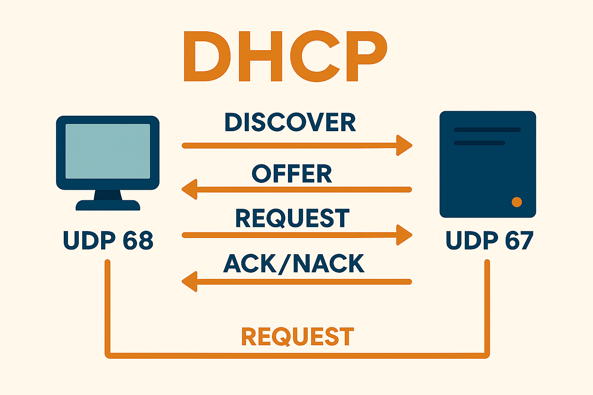

UD1 – Servicio DHCP
1. Introducción
El DHCP (Dynamic Host Configuration Protocol) permite que los equipos de una red obtengan automáticamente una configuración completa: dirección IP, máscara de subred, puerta de enlace, servidores DNS y más.
A nivel técnico, DHCP utiliza los puertos UDP 67 (servidor) y UDP 68 (cliente) para intercambiar los mensajes iniciales de configuración. Como los clientes aún no tienen una dirección IP válida al iniciar el proceso, estos mensajes se envían mediante broadcast.
Además del protocolo tradicional para IPv4, existe DHCPv6, una variante diseñada específicamente para redes modernas con IPv6.
Sin DHCP, el administrador debe asignar manualmente las direcciones IP de cada dispositivo (ordenadores, servidores, impresoras, cámaras IP…), lo que resulta lento, repetitivo y propenso a errores.
2. Ventajas del uso del servicio DHCP
- Administración centralizada: solo es necesario editar la configuración del servidor.
- Evita errores y conflictos IP: previene duplicados o direcciones incorrectas.
- Ahorro de tiempo: los clientes reciben la configuración automáticamente.
- Simplifica la gestión: todo se controla desde un único punto.
- Flexible en redes grandes: permite modificar rangos de IP o la topología sin tocar cada dispositivo.
- Facilita la movilidad de equipos: los dispositivos portátiles pueden cambiar de red y obtener configuración automáticamente.
3. Funcionamiento
El proceso de asignación de IP entre cliente y servidor sigue cuatro pasos básicos conocidos como DORA:
- Discovery: el cliente solicita una configuración de red usando broadcast.
- Offer: el servidor ofrece una dirección IP disponible.
- Request: el cliente acepta la oferta y la solicita formalmente.
- Acknowledge (ACK): el servidor confirma la concesión o la rechaza (NACK).
Diagrama del proceso DORA:

Este proceso utiliza UDP, un protocolo no orientado a conexión, ya que el cliente aún no tiene IP ni puede establecer comunicación unicast.
4. Intervalos, exclusiones, concesiones y reservas
Intervalos
Son los rangos de direcciones IP que el servidor puede asignar.
subnet 239.252.197.0 netmask 255.255.255.0 {
range 239.252.197.10 239.252.197.107;
range 239.252.197.113 239.252.197.250;
}
Exclusiones
Son direcciones que no se asignan dinámicamente, como: - IP del router. - IP de la impresora.
Concesiones
Consisten en la asignación temporal de una IP a un cliente.
Reservas
Permiten asignar siempre la misma IP a un dispositivo concreto (identificado por su MAC). Son útiles para: - Servidores. - Impresoras. - Dispositivos que requieren IP fija.
host iesserver {
hardware ethernet 08:00:2b:4c:59:23;
fixed-address 140.220.191.1;
}
5. Configuraciones adicionales del servicio
DHCP permite añadir parámetros extra:
5.1. option subnet-mask
Define la máscara de subred.
5.2. option routers
Indica la puerta de enlace predeterminada.
5.3. option domain-name-servers
Define los servidores DNS que usará el cliente.
Otras opciones útiles
- option domain-name → establece el nombre del dominio local.
- option broadcast-address → define la dirección broadcast de la red.
- option ntp-servers → especifica servidores NTP para sincronización horaria.
6. Problemas del servicio DHCP
Ataques DoS
Un atacante puede saturar al servidor enviando múltiples solicitudes.
DHCP Spoofing
Un atacante suplanta al servidor DHCP legítimo y proporciona configuraciones falsas.
Medidas de seguridad recomendadas
- DHCP Snooping: evita servidores DHCP falsos en la red.
- Filtrado por MAC: útil en redes pequeñas para controlar dispositivos permitidos.
- VLANs: segmentan la red y mejoran la seguridad.
6.1. Conflictos de direcciones IP
Ocurren cuando: - El archivo de configuración está mal definido. - Un cliente fija manualmente una IP dentro del rango dinámico.
Estos conflictos provocan fallos de comunicación y deben evitarse mediante una correcta planificación.